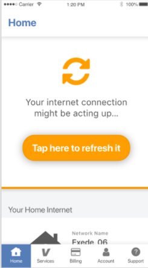
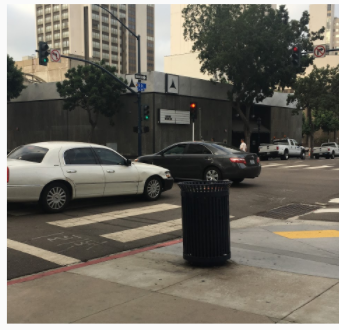
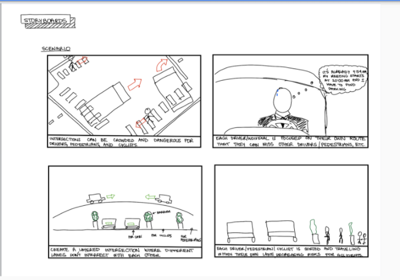
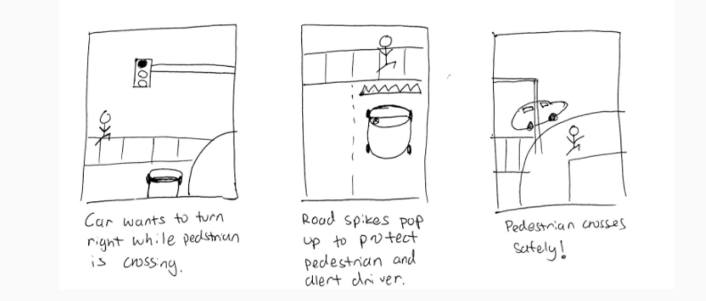

I worked in a team at Viasat during summer 2017. Our task was to design an app for Viasat's commercial internet service, Exede. Currently, users only had a website, which was not effective in solving easy problems, such as paying bills or troubleshooting. The goal was to provide an easy experience for customers to quickly access all their internet needs.

My team had designed an initial prototype before I joined. At this stage, the app was to mainly be used as a troubleshooting tool, to help people understand why their internet might not be working.
I joined in time for our first round of user testing. I wrote the interview procedure and questions, conducted and documented the interviews, and recommended design changes.
After three rounds of testing, with 9 users, we found that our color scheme was too distracting, especially for our target audience. We were using big blocks of color that made it hard for users to navigate through the app. Additionally, our users had a hard time understanding the functions of certain buttons, or the flow of certain processes.

For example, users did not realize that to start the reboot process, they simply have to press a button. Users automatically saw the word "reboot", and started having an anxious reacting, looking for a modem to unplug.
The information architecture was also causing trouble for users. Users had a hard time figuring out where certain functions would be in the navigation menu. We decided to add a billing menu to the navigation.
We toned down the color on the overall design, changed the language on the reboot screen to avoid triggering and incorrect responses, and reduced the amount of screens in the troubleshooting process to make the experience seem shorter and limit the amount of user intervention.
We tested users with our new design, and found that when we used the word "refresh" instead of "reboot", users were less tense and pressed the button. They trusted the app to solve the problem. They also understood the process and the navigation.
I was working on another project trying to use artificial intelligence to cut customer care costs. I was surprised that most of the calls were billing issues that could easily be solved by an intuitive app or website. After creating use case flows, I designed screens that allowed users to easily manage their payment methods, and understand their bills.
After user testing, I changed the layout of some screens. Originally, users were confused between the difference in "past transactions" and "future transactions" because they were placed too close to each other and looked similar. Therefore, I changed the language and placement to make a clear distinction. Additionally, I changed all editable fields to be the same color to remain consistent.
I worked in a team to analyze current popular music applications such as Spotify, Apple Music, and Amazon music and find opportunities for a better overall design. This analysis was completed through interviews, between-app workflow comparisons, a competitive analysis of Information Architecture, and a final mockup of a prototype redesign.

We interviewed 9 participants using Spotify, Apple Music, and Amazon Music to understand why people prefer certain apps, what they use these music apps for, and which music apps provide a good user experience.
We asked users to create playlists for different types of events, manage their playlists, share their playlists with friends, and search for new music. We defined two types of users based on our interviews.
We compared good and bad user workflows between Spotify, Amazon Music, and Apple Play. For example, we compared the experiences discovering new music using Apple Music and Spotify.
Apple Music currently does not have a good layout for discovering new music.
Once in browse, user can click on "new music"
They are immediately presented with music news
Only after scrolling down, a user sees new tracks
Overall, a user has to really search for new music, and is provided with irrelevant information throughout the task.
In contrast, Spotify's UI for discovering new music is very clear. Immediately, the home screen provides music a user might like based on algorithms.
Already on the home screen, there is a section for music "made for you" that is collected based on music you might like.
A list of new music is clearly presented, with the option to download the songs or play them.
A user can easily click on a new song and discover new music, add it to their playlist, or save it.
We compared the Information Architecture of Apple Play, Amazon Music, and Spotify to understand which platform provided the best and most intuitive navigation which we could integrate into our new design.
Apple Play has a navigation that is focused on the personalized experience. They have a menu for Library placed to the left, followed by a "For You" recommendation. However, listed under new music is Exclusive Film, Playlists, Hot Tracks, New Releases, and finally Videos. The top display listed under new film is Exclusive Film, which is not really music, and therefore in almost the wrong or unintuitive category.

Amazon Music's structure makes it an easy platform to search for new music. The first item in the nav menu is Browse, and every nav menu includes a search bar on the second level of its hierarchy. There is no social aspect included in the hierarchy, and it only creates a sense of searching for new music, rather than being connected to music other people are listening to.

Spotify lists library at the end of the navigation menu. People generally have the mental model where important items appear first in a list. Music listeners often listened to music in their own library, and were therefore confused when "library" appeared at the end of the navigation menu. Additionally, diving deeper into "genres", there are sections for "Global Top Music" and "Global Viral Music". The distinction between "Top Music" and "Viral Music" are unclear, and grouped together, even though "American Music" and "Country" are paired together. This design is inconsistent and uninformative.

Based on user testing and the Information Architecture Analysis we made several decisions about our app layout. We listed Home Library Friends Discover and Search in that order. Based on our interviews, people mainly want to access their own library, but that they also look to these music apps as a way to find new music. Therefore we added a Discover section to provide additional music recommendations. We also realized throughout our interviews that people rely on their friends for music, and want more of a social aspect to the app. Therefore we included a "Friends" section as a navigation menu. We took inspiration from Amazon's style of providing a search bar in every nav menu, and allowed our users to access their friend's music on the home page, in the "Friends" nav menu, and within Browse.


We originally showed the song that a friend was listening to right above the picture of a friend. However, we decided this layout was too similar to the current song that a user was listening to. We did not want our users to be confused between their current song playing, and what their friend was currently listening to. Therefore we put the song title below the picture of the friend, and made the design different than that of the music a user is listening to.
We wanted to create an effortless experience for users to find new music, in this case from their friends, and add it to their playlist
Users can see a list of their friends, and choose a specific one to see their music history
Users can click on a specific song
Each song has options
These options include adding it to a playlist and sharing with friends
A user can add it to an existing playlist, or create a new one
When a song is added to a playlist, there is a clear confirmation for user feedback
Overall this design is a lot more social based and provides a clear flow for user scenarios. It allows users the option to share a song, discover new music and artists, and easily manage their playlists.
I worked in a team and entered the Design for San Diego challenge. The were interested in the issue of safety in busy intersections around San Diego. Specifically, how we can leverage current existing technology and design to create a safer environment for drivers, pedestrians, and cyclists.

We went to several intersections around San Diego where fatal accidents occur most often. We observed cars disobeying street signs, interacting with pedestrians, and unsafe behavior from pedestrians.
A driver is about to make the wrong turn into a one-way street, but the pedestrian stops the driver. This interaction between pedestrians and drivers is important for safety.
In a less fortunate case, the driver does not notice the signs indicating a one-way street and makes a turn into oncoming traffic.
We also noticed pedestrians standing at the edge of a sidewalk often close enough to be hit by a car. Similarly, we saw tire tracks very close to sidewalks where people often stand.

Lines that indicate where a car should stop are often ineffective, and cars end up stopping in the middle of crosswalks.
We interviewed drivers, cyclists, and pedestrians to understand how these stakeholders feel about safety issues around intersections.
Based on all of this user testing, we defined the problem that there is too much information happening in intersections. Drivers have to be aware of pedestrians and cyclists who often come out of nowhere, directions, and important street information. All of this information can cause cognitive overload, and overwhelm drivers which leads to mistakes.
We created storyboards to portray some of our far out ideas.
The idea was to have cylclists, cars, and pedestrians all on different levels of streets to prevent contact between any stakeholder. This idea obviously was not feasible, however it made us think about ways to make the interaction between these parties safer.
We also thought about putting retractable spikes in the streets that would pop up when a car has a red light and physically prevent them from moving forward, also increasing safety. This too is not feasible, however it made us think about ways that we could metaphorically stop cars if not physically.

Our idea was an app that could be presented through a heads up display, or on the dashboard, that showed users important information from the streets. This included nearby pedestrians, cyclists, other cars, important street signs, and obstructions in the word. This information would be collected through the smart street lights which are currently in place in downtown San Diego. This street lights have the capability to process images, which we would then transfer to the cars. This would highlight important information in case drivers missed something.
We submitted all of our user testing and prototype to the Design for San Diego challenge and received a lot of constructive feedback. The main concern was that this design would be more distracting than helpful.
To address these concerns we tested out our prototype.
We tested our design by "WOZing" our prototype with drivers. We first looked at how distracted drivers were using google maps, and then tested the effectiveness of a device that would highlight important objects in the street.
We held a phone at the front and side of the car to capture different angles. We then skyped this screen to another phone and drew over objects that we viewed as a potential threat to safety, such as another car or pedestrian. We also tried to use auditory cues such as a beeping noise if a driver was in danger.

We decided to model our solution after google maps. The app would provide video footage of what was happening in the road if users wanted to glance at it, but not require them to always look at the interface for warnings. Our app would use auditory alerts by actually saying statements such as "watch out for the pedestrian". Additionally, the app will only alert drivers during dangerous situations. For example if the car was stopped while a pedestrian was crossing the street, there would not be an alert. The app would only warn the driver if the car started moving.
We envision a future with a personal assistant in every car. As more cars begin to implement cameras with a 360 degree view, this will be the reality.
Some additional features we hope to provide is to integrate artificial intelligence into PAC and add the functionality of being to ask it questions such as: “Is it safe to make a right lane change?” In that way, our system would mimic the "front seat driver", who warns the driver of possible collisions.
I worked in a team to design a plant watering system. We worked with an organization called "One Step", who challenged us to design an autonomous, solar powered plant watering system. Because of online and user research, we broadened the design requirements to create a general watering system that used energy efficient methods.


We identified our key stakeholders, and created a stakeholder analysis matrix to keep in mind throughout our design process.

Creating this helped us understand who might have interest in our project, why they have an interest, and how much influence they would have. This helped us address the proper way to design for each of our stakeholders. For example, although policymakers are concerned with lowering the amount of water used around California, the priorities and needs of gardeners is more important to us.
We conducted online research to gain context about our design challenge. Due do the drought and wildfired in California, policymakers have set laws restricting the amount of waters citizens can use, and setting heavy fines for wasting water. We found that sprinkler systems are often wasteful, and spray water in areas beyond the garden. Drip irrigation is the most effective method of watering plants, however most people don't have the knowledge or ability to implement these systems.
Based on interviews with 16 gardeners around California, we created a user profile.

Susan in 40 years old. She gardens as a hobby. Susan is in the upper-middle class. She has two kids that help her around the garden, but are not always around, or remember to water the plants. Susan travels a lot with her husband, and so neither of them are able to be home all the time. Susan grows flowers and fruit trees, which require different amounts of water at different times.

We identified key needs and insights based on our interviews with gardeners.

We created an analogous solution analysis to help us understand the benefits and drawbacks of what people currently use.


After drawing inspiration from existing solutions, we came up with sketches that utilized the pros of existing solutions, while avoiding the cons.

This design addresses the need for a cheap solution that can adapt to every type of garden. The design uses cheap recycled materials, and can be designed for every backyard. The strengths of this design is that it is environmentally sustainable, low budget, and adaptive because systems are created for specific gardens. It is open sourced, and provides a good opportunity for education. Some weaknesses are that this design has the potential of faster deterioration. It takes time to make and install the system from scratch, and people might have a hard time understanding instructions.

The core need that this design solves is an automatic system that reduces the amount of water saved. This design has a water insert that leads to a bucket that filtrates water. The tank can hold up to two weeks of water. Solar panels power an arduino, alongside soil sensors. Together, the arduino controls linear motors to stop or allow flow to plants based on soil sensors. It flows to plants through a drip watering system which allows for variable flow rate. The strengths of this design are that the filtration device removes physical impurities, the soil sensors monitors soil water needs, and the drip irrigation efficiently delivers water to plants. Some weaknesses are that the soil sensor could be inaccurate, and it needs user input every two weeks to sustain water source.


The core need that this design addresses is the desire to reduce water usage by using water efficiently. This design inputs water from a waterline, and waters as seen necessary based on a sensor chip. The excess water is collected at the bottom of the plants, and is then put back into the tank collecting water from a waterline. The strengths of this design are that it has sensor driven automation for efficiency. It is adaptable to different kinds of plant by adjusting the structure. Some weaknesses are that it has many different components means more things that could break or need replacement, and it might be difficult to teach users how to utilize and maintain the technology used.
We created a table to identify what criteria is important for our final solution, and the metrics we would use to assess each idea.

After showing our sketches to gardeners, we received vital feedback.


We made a Pugh Chart based on the feedback we received.

Based on these findings, we decided to use the online drip irrigation guide using certain components from the Solar Powered Drip Irrigation design. These components include the filtration bucket and the solar powered arduino system.

Our final design includes articles to increase knowledge and help people understand our guide. It also includes a cost estimator to calculate the required materials and cost based on individual's gardens, and a community forum for people to ask questions or give advice based on experience.

Articles help inform users about drip irrigation related topics to increase education.


Gardeners can input the specificities of their garden, and receive materials and instructions based on their needs.

The guide will list the amount of materials needed for each component, as well as a description of each material and a link to buy it online.
Finally, the guide will provide step by step instructions for building the system. For example, the instructions to build the actual pipes will look as follows...


Some problem that may arise from our design is that the materials can end up being costly and use up more resources, especially if people do not already own these materials. There is an education barrier, and people who are less tech-savvy might have difficulty implementing certain components. Additionally, the instructions may be hard for people to understand, and there are no other resources besides this guide to help gardeners. Future work would include video tutorials to help gardeners implement this design.